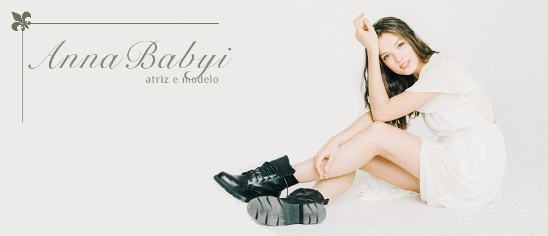
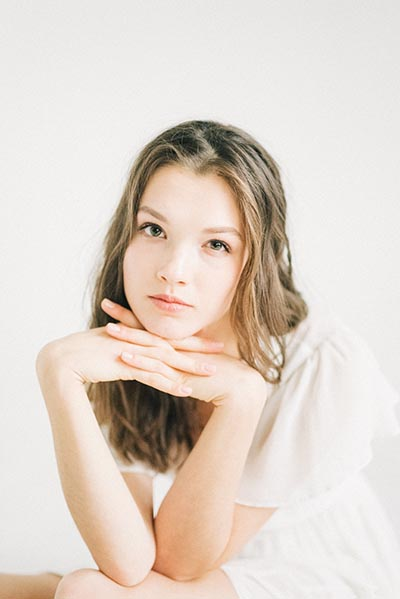

Anna Babyi é uma atriz e modelo ucraniana, nascida em Kiev, em 2000. Sempre sonhou em entrar no mundo da moda e, aos 14 anos, foi contratada por uma agência de modelos. Após alguns anos, fez cursos e se profissionalizou como atriz. Sua carreira na TV começou na série "Liberdade", da Novy TV, vivendo a protagonista Thalita, na 2º temporada da trama teen do canal, em 2018. Já em 2019, a atriz integrou o elenco do aclamado filme "Diga Não a Guerra" e deu vida a personagem Oleksandra.
Mas foi na minissérie "Direito de Viver", em 2022, que Anna Babyi atraiu todos os olhares para seu trabalho. Na pele da rebelde Olga, a moça além de muito elogiada, recebeu indicações para vários prêmios por sua atuação. Atuará no mais novo filme, "Vitória em Kiev", em 2023. Na vida pessoal, a atriz é namorada do cineasta Andrii Búrigo.
Premiações
| Ano | Premio | Categoria | Trabalho |
| 2018 | TV Ucrania | Melhor Atriz | Liberdade |
| 2019 | Trofeu internet | Revelação do ano | Diga não a guerra |
| 2022 | Premio Kiev | Melhir Atriz | Direito de viver |